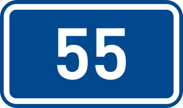

Cesta prvej triedy 51 • Česká Republika - Hodonín
Cesta prvej triedy 51 • Česká Republika - Hodonín
→ SK| Typ objektu | Číslo výjazdu | Smer/-y | Prejazdy | Poznámka |
|---|
| Typ objektu | Číslo výjazdu | Smer/-y | Prejazdy | Poznámka |
|---|---|---|---|---|
| vyjazd | 0 | Bratislava, Smer SK , Brno, Břeclav ← | → Uherské Hradište, Skalica, Smer SK |